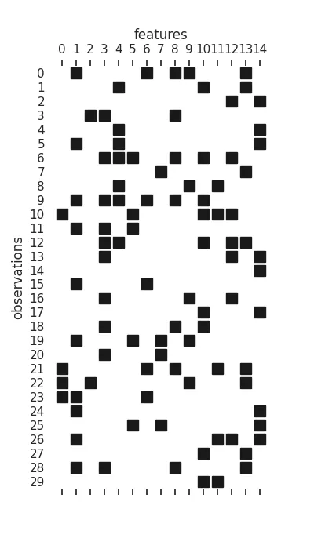
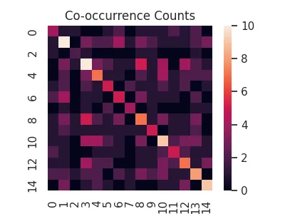
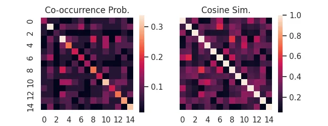
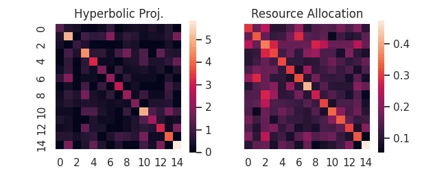
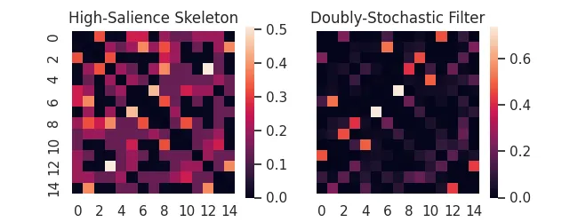
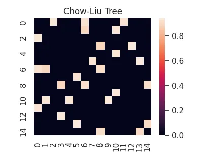
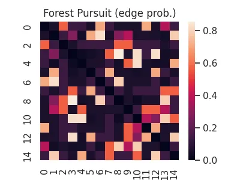
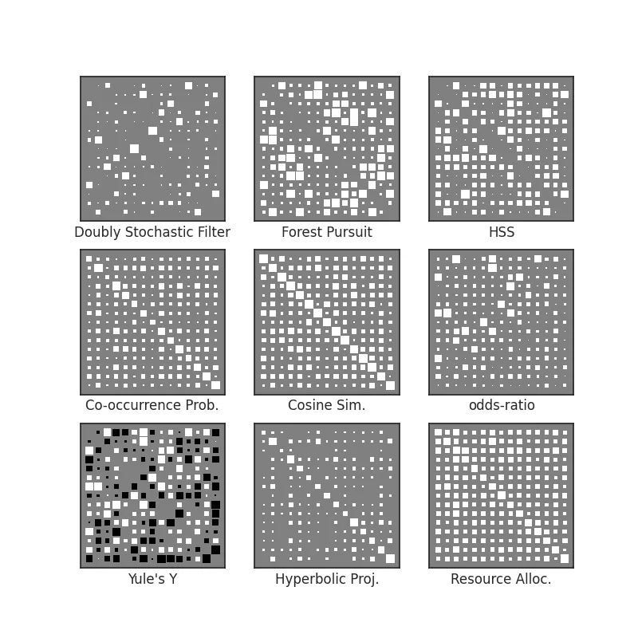

Binary Association
Through this guide, we will demonstrate the core features of affinis, and though this
synthetic datastet has no underlying "structure" to recover, you will hopefully see how the various methods compare to each other.
First, some setup of the python environment, for reproducibility:
import numpy as np
import networkx as nx
import seaborn as sns
import pandas as pd
import matplotlib.pyplot as plt
from pathlib import Path
plt.rc('figure', figsize=(4.0, 3.0))
sns.set_theme(style='white')
imgpath=Path('../../docs/user-guide/img/')
We are going to generate a random bipartite graph, as a stand-in for a binary feature matrix. This can represent a document-term matrix, user-preference (recommender) data, or any number of similar feature matrices.
n_cols=15
n_rows=30
B = nx.bipartite.random_graph(n_cols,n_rows, .25, seed=2)
n = list(B.nodes)[n_cols:]
X = nx.bipartite.biadjacency_matrix(B, n).toarray()
plt.figure(figsize=(4,7))
plt.spy(X, marker='s', color='k')
ax = plt.gca()
sns.despine(left=True, bottom=True)
ax.xaxis.set_label_position('top')
ax.set(
xticks=range(n_cols), xticklabels=range(n_cols),
yticks=range(n_rows), yticklabels=range(n_rows),
xlabel="features", ylabel="observations"
);
plt.savefig(imgpath/'Xmat.webp')
Each row is an "observation", while each column is a feature that can be active or inactive, during that observation.

From here, we will group the methods by the kinds of assumptions made, roughly corresponding to the taxonomy presented in Sexton (2025):
Marginal Counts & Probabilities
This class of association measures cares less about any kind of underlying "structure" between features and more about how observations are able to be counted/combined for statistical aggregation.
The majority rely on the observational units being additive, such that we can apply an inner product \(X^TX\) on them. Intuitively, such an inner product returns the co-occurrence counts of each feature, along with the overall count for a feature in the diagonal.
cooc = X.T@X
sns.heatmap(cooc, square=True)
plt.title('Co-occurrence Counts')
plt.savefig('../../docs/user-guide/img/cooc.webp')

Following from this, we can re-weight co-occurrences as conditional probabilities to derive a host of useful measures.
affinis provides a consistent interface to many of them, already.
For instance, the probability of co-occurrence, or its (uncentered) normalization, cosine similarity. For binary data, "cosine similarity" is also called the Ochiai Coefficient.
import affinis.associations as aff
coo = aff.coocur_prob(X)
cos = aff.ochiai(X)
f,ax = plt.subplots(ncols=2, figsize=(6.5,2.5), sharey=True)
sns.heatmap(coo,ax=ax[0], square=True)
ax[0].set_title('Co-occurrence Prob.')
sns.heatmap(cos,ax=ax[1], square=True)
ax[1].set_title('Cosine Sim.')
plt.savefig('../../docs/user-guide/img/cooc-prob.webp')

For more of this style of association measure provided by affinis see:
Using all the Data
Rather than re-weighting the margnial probabilities, perhaps we can take advantage of the available bipartite structure of the full feature matrix. These methods require having the original data, since they re-weight individual observations (rows) using their activations.
For instance, if rows are papers published and columns are authors, perhaps we want to equally share authorship of a many-author paper, but don't want the work of each author to be counted as equal to a single-author paper efforts.
See our documentation on Hyperbolic Projections and Resource Allocation
hyp = aff.hyperbolic_project(X)
rsc = aff.resource_project(X)
f,ax = plt.subplots(ncols=2, figsize=(6.5,2.5), sharey=True)
sns.heatmap(hyp,ax=ax[0], square=True)
sns.heatmap(rsc,ax=ax[1], square=True)
ax[0].set_title('Hyperbolic Proj.')
ax[1].set_title('Resource Allocation')
plt.savefig('../../docs/user-guide/img/bi-proj.webp')

Backboning & Structure Recovery
Going a bit further than pure association methods, for bipartite projection problems like these we are often trying to backbone our graph to only the relationships that convey meaningful structural relationships between features.
Trimming Hairballs
Association measures are notorious for turning bipartite datasets into "hairballs"! Backboning is a term for the class of methods that try to "trim the hair", filtering out edges using principled (often statistical) techniques
As examples, affinis provides implementations of the High-Salience Skeleton backbone, as well as the Doubly-Stochastic Filter.
hss = aff.high_salience_skeleton(X)
dsf = aff.doubly_stochastic_filter(X, reg=0.2)
f,ax = plt.subplots(ncols=2, figsize=(6.5,2.5), sharey=True)
sns.heatmap(hss,ax=ax[0], square=True)
sns.heatmap(dsf,ax=ax[1], square=True)
ax[0].set_title('High-Salience Skeleton')
ax[1].set_title('Doubly-Stochastic Filter')
plt.savefig(imgpath/'backbones.webp')

Alternatively, we might try to discover an underlying probabilistic graphical model that could have generated our observations. While we do not provide any covariance shrinkage methods that are popular for this (e.g. GLasso or Loopy Belief Propagation)1, we do provide an implementation of the Chow-Liu tree method, as well as the newly proposed Forest Pursuit estimate, both of which can recover probabilistic graphical models under appropriate assumptions.
clt = aff.chow_liu(X)
sns.heatmap(clt, square=True)
plt.title('Chow-Liu Tree');
plt.savefig(imgpath/'chow-liu-tree.webp')

Forest Pursuit
This recently proposed method by Sexton (2025) attempts to combine the local/additivity assumptions of the methods we've covered so far, while also directly recovering an underlying network of conditionally dependent pairs of nodes (the probabilistic graphical model).
Forest Pursuit replaces the inner product "counts" with an operator that treats observations as samples from a random spanning forest distribution (meaning that each observation is a result of a "spreading process").
This puts it somewhere between the previously discussed association measures (computationally) and the backboning/dependency-recovery methods (theoretically), while providing exceptional scalability, along with accuracy and thresholding stability.
fps = aff.forest_pursuit(X)
sns.heatmap(fps, square=True)
plt.title('Forest Pursuit (edge prob.)')
plt.savefig(imgpath/'fp.webp')

See our documentation on Forest Pursuit for more.
Visualization
Often when comparing the ability of an association measure to recover structure from a set of binary variable observations, it's not necessarily important to see the values of the association, but instead which relationships are strong relative to the overall set.
Colors (like we have used above) can be somewhat hard to parse, so another option is to represent association strength with size. This creates what we call a Hinton diagram. Size reflects normalized weight, while color can be used for the sign (positive vs negative).
from affinis.plots import hinton
methods = {
'Doubly Stochastic Filter': dsf,
'Forest Pursuit': fps,
'HSS': hss,
'Co-occurrence Prob.': coo,
'Cosine Sim.': cos,
'odds-ratio': aff.odds_ratio(X),
'Yule\'s Y':aff.yule_y(X),
'Hyperbolic Proj.': hyp,
'Resource Alloc.':rsc,
}
f,axs = plt.subplots(nrows=3, ncols=3, figsize=(8,8))
for n, (lab, Aest) in enumerate(methods.items()):
ax = axs.flatten()[n]
hinton(Aest, ax=ax)
ax.set_xlabel(lab)
plt.savefig(imgpath/'assoc-overview.webp')

-
Interested users might refer to more mature implementations of GLasso, such as the one found in scikit-learn or skggm, since these rely on complex optimization or sampling routines and are out-of-scope for
affinis. ↩